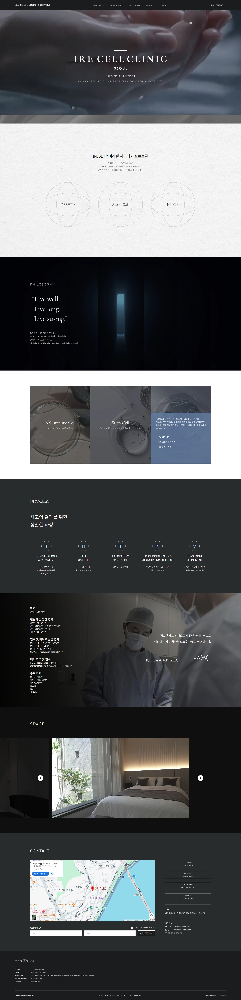
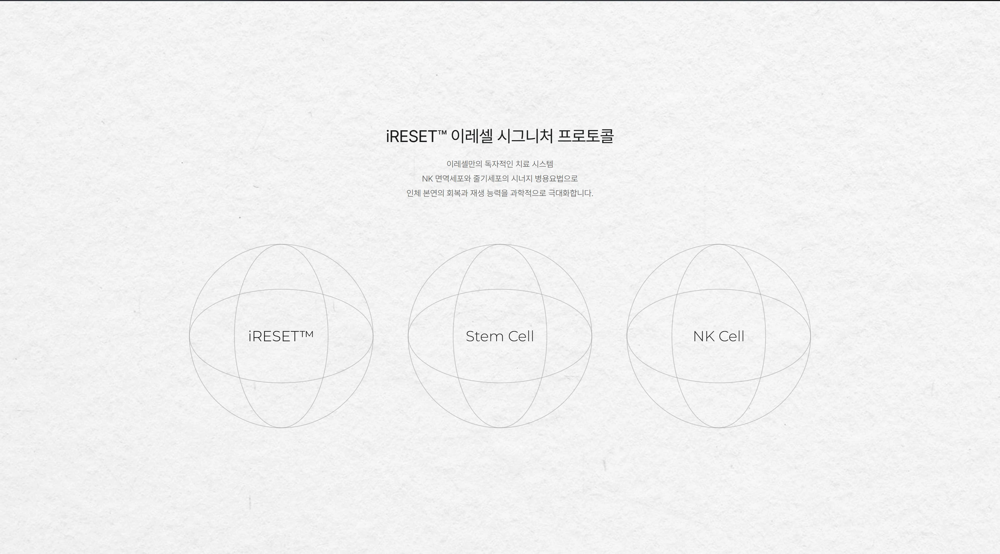

RESULT
큰 수정 없이 오픈하고,
연계 프로젝트로 이어졌습니다.
이 작업을 계기로 같은 클라이언트의 세포 배양 연구소 GENOVA LAB 홈페이지 디자인을 이어서 맡았습니다.
2026.06
줄기세포 치료 전문 병원 이레세포 원페이지 홈페이지

SUMMARY
해외 환자도 찾는 줄기세포 치료 전문 병원 이레세포의 원페이지 홈페이지입니다. 해외 줄기세포 병원이나 국내 병원은 홈페이지에 정보를 최대한 절제하는 경우가 많아, 클라이언트 요청에 맞춰 정보량을 줄이고 고급스러운 다크 톤으로 신뢰감을 담았습니다.
마케팅팀의 기획을 바탕으로 처음으로 디자인부터 퍼블리싱까지 전 과정을 맡았고, 영어 · 중국어 페이지까지 구현했습니다.
KEY POINTS
해외 · 국내 줄기세포 병원 사례처럼 정보를 덜어내고, 다크 톤과 여백으로 프리미엄 병원의 인상을 만들었습니다.
히어로 바로 다음에 이레세포만의 줄기세포 치료를 보여주고, 이미지와 정보를 차례로 배치해 스크롤만으로 병원을 이해하도록 구성했습니다.
언어별 페이지를 따로 구현하고, 번역문의 어색한 줄바꿈을 다듬었습니다. 연락 수단도 위챗 · 왓츠앱으로 언어별로 나눴습니다.
회전하는 원 그래픽과, 커서가 원 형태로 바뀌며 뒤 이미지의 색을 반전시키는 효과를 넣었습니다.
FULL PAGE
실제 사이트의 전체 화면입니다. 화면 안에서 스크롤하면 처음부터 끝까지 볼 수 있습니다.

LIVE SITE
회전하는 원 그래픽과 원형 커서의 색상 반전 효과는 캡처로 담기지 않아, 실제 사이트에서 직접 확인할 수 있습니다.


MULTILINGUAL
하나의 디자인을 퍼블리싱한 뒤 언어별 페이지로 나누고, 클라이언트가 제공한 번역문을 적용했습니다.


버튼으로 텍스트만 바꾸지 않고 언어마다 별도 페이지로 이동하게 구현
언어마다 글자 길이가 달라 어색하게 끊기는 문장을 직접 수정
중국어는 위챗, 영어는 왓츠앱 등 언어권에 맞는 연락 방법 배치
LOOKING BACK
정보가 적은 원페이지인 만큼, 텍스트 페이드인 같은 인터랙션을 더 활용했다면 글이 적어도 심심하지 않은 페이지를 만들 수 있었을 것 같습니다.
AFTER
AI를 섹션 단위로 쓰던 방식에서 프로젝트 전체를 한 번에 관리하는 방식으로 바꿔 퍼블리싱 속도를 높였습니다. 네비게이션 · 푸터처럼 모든 페이지에 들어가는 부분은 CSS를 따로 분리하고, AI가 만든 폴더 구조를 보며 파일 정리 방식을 익혔습니다.
RESULT
이 작업을 계기로 같은 클라이언트의 세포 배양 연구소 GENOVA LAB 홈페이지 디자인을 이어서 맡았습니다.